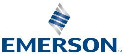

Presented by Ali & Christina
Helping industrial customers improve operational efficiency, reliability, safety and productivity, by combining automation technologies, measurement and control solutions, industrial software, and related products and services.
| Customer group | Company / organization | Needs |
|---|---|---|
| Chemical & petrochemical | LyondellBasell, LANXESS | Process control, plant safety, emissions reduction |
| Energy & oil / gas | Equinor, Aramco | Precision measurement, minimizing downtime, yield optimization |
| Mining & raw materials | South32, Lithium Americas Corp. | Throughput optimization, remote monitoring, automation in harsh environments |
| Energy generation & gas infrastructure | Intermountain Power Agency, Enagás | Grid monitoring, security of supply, decarbonization / hydrogen integration |
| Water & wastewater | Sacramento Regional County Sanitation District | Process control (Ovation DCS), flow & level measurement, pump control |
| Industrial manufacturers (automotive) | Subaru (NI), Jaguar Land Rover (NI) | High-speed test automation, hardware-in-the-loop, ADAS / EV validation |
Thank you. We're happy to discuss Emerson's strategy, portfolio and outlook.
[1] Emerson. (n.d.). Automated Test & Measurement. emerson.com
[2] Emerson. (n.d.). Automation Solutions for High-Stakes Operations. emerson.com
[3] Emerson. (n.d.). Automation Systems. emerson.com
[4] Emerson. (n.d.). Boundless Automation. emerson.com
[5] Emerson. (n.d.). Brands. emerson.com
[6] Emerson. (n.d.). Company History. emerson.com
[7] Emerson. (n.d.). Discrete Automation. discreteautomation.emerson.com
[8] Emerson. (n.d.). Final Control. emerson.com
[9] Emerson. (n.d.). Measurement Instrumentation. emerson.com
[10] Emerson. (n.d.). Original Equipment Manufacturers (OEM). emerson.com
[11] Emerson. (n.d.). Reliability & Asset Monitoring Solutions for OEMs & EPCs. emerson.com
[12] Emerson. (n.d.). Safety & Productivity. emerson.com
[13] Emerson. (2019). Emerson helps Longview Power Plant (PWS_009456). emerson.com
[14] Emerson. (2022). LANXESS Selects Emerson for Advanced Automation Technology. emerson.com
[15] Emerson. (2023). Emerson Software Helps Intermountain Power Agency. emerson.com
[16] Emerson. (2024). LyondellBasell Selects Emerson to Modernize Automation. emerson.com
[17] Emerson. (2025). Emerson Selected to Automate South32's Hermosa Project. emerson.com
[18] Emerson. (2025). Emerson to Automate Lithium Americas' Thacker Pass Project. emerson.com
[19] Emerson. (2025). 2025 Investor Conference: Engineering the Autonomous Future. ir.emerson.com
[20] Emerson. (2026). Emerson and Aramco Deploy AI Solution for Refinery Yield. emerson.com
[21] Emerson. (2026). Advanced Measurement Instrumentation Selected by Equinor. emerson.com
[22] Emerson. (2026). Selected by Spain's National Gas Grid Operator (Enagás). emerson.com
[23] Emerson Electric Co. (2025). Form 10-K, FY ended 30 Sep 2025. sec.gov
[24] Emerson Electric Co. (2026). Form 10-Q, quarter ended 31 Dec 2025. sec.gov
[25] Emerson Electric Co. (2026). Notice of 2026 Annual Meeting & Proxy Statement. sec.gov
[26] Emerson Process Management. (2015). Main Automation Contractor. emerson.com
[27] Emerson Process Management, Power & Water Solutions. (n.d.). Case Study: Sacramento Regional County Sanitation District. wateronline.com
[28] Morita, T. / NI. (n.d.). Advancing Subaru Hybrid-Vehicle Testing via Hardware-in-the-Loop Simulation. ni.com
[29] NI. (2022). Jaguar Land Rover and NI Join Forces on ADAS Solutions. ni.com
[30] Owler, Inc. (n.d.). Emerson Competitors or Alternatives. owler.com
[31] Practice Technologie & Telekom. (2026). Industrial control for process automation market. mordorintelligence.com
[32] Emerson. (2026). Q3 FY2026 results & updated outlook. emerson.com
[33] Emerson Electric Co. (2026). Form 10-Q, quarter ended 30 Jun 2026. sec.gov
[34] Emerson. (2025). Q4 & full-year 2025 results. emerson.com
[35] Emerson. (2025). Q2 2025 earnings presentation. emerson.com
[36] Emerson. (2023). Completion of the NI acquisition. emerson.com
[37] Emerson. (2022). Form 8-K: completion of the AspenTech combination. sec.gov
[38] Emerson & AspenTech. (2025). Agreement to acquire remaining AspenTech shares. emerson.com
[39] Emerson. (2025). Completion of the remaining AspenTech share acquisition. emerson.com
[40] Blackstone & Emerson. (2023). Completion of the majority Copeland acquisition. blackstone.com
[41] Emerson. (2024). Completion of the sale of the remaining Copeland interest. emerson.com
[42] Emerson. (2024). Q3 2024 results & Copeland proceeds. emerson.com
[43] Emerson. (2024). Q4 & full-year 2024 results. sec.gov
[44] Hungarian Investment Promotion Agency. (2026). Emerson R&D project in Debrecen, Hungary. hipa.hu
[45] Emerson. (2026). Appointment of a Chief Technology & AI Officer. emerson.com
[46] Emerson. (2026). Acquisition of Glue Inc. emerson.com
[47] Emerson. (2026). DeltaV version 16 LTS release. emerson.com
[48] Emerson. (2026). Next-generation AspenTech Inmation industrial data fabric. emerson.com
[49] Emerson. (2026). AspenTech AVA industrial AI platform. emerson.com
[50] Emerson / NI. (2026). AI-ready test automation platform at NI Connect. ni.com
[51] Emerson. (2025). DeltaV PKM Modality Library collaboration with Roche. emerson.com
[52] Aspen Technology. (2021). SABIC utility system optimization case study. aspentech.com
[53] Emerson. (2025). Expansion of measurement service coverage (Impact Partners). emerson.com
[54] NI. (n.d.). NI integration services. ni.com
[55] Emerson. (2026). OPTIMIZE 26 program preview. emerson.com
[56] NVIDIA & Siemens. (2026). Expanded industrial-AI partnership. nvidianews.nvidia.com
[57] International Energy Agency. (2025). Energy demand from AI. iea.org
[58] NIST. (2023). Guide to Operational Technology (OT) Security, SP 800-82 Rev. 3. nist.gov
[59] Emerson. (2026). Schedule for Q4 & full-year 2026 results. emerson.com
[60] Emerson. (2024). AspenTech share proposal & review of Safety & Productivity. emerson.com
[61] Emerson executives. (2025). FY2025 earnings call remarks (transcript). fool.com
[62] Emerson Electric Co. (2025). Form 8-K: revised reporting structure. sec.gov